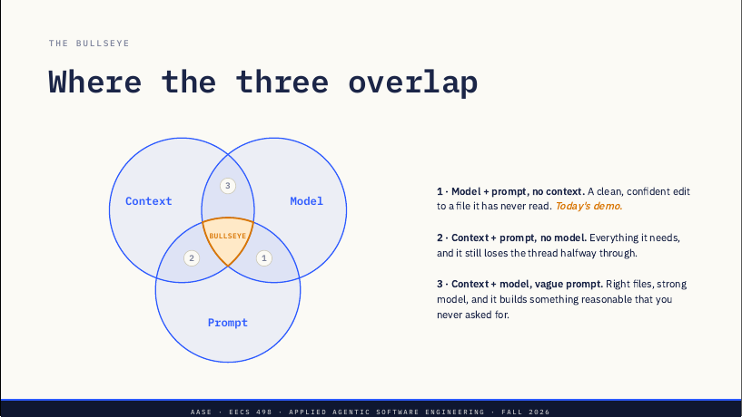
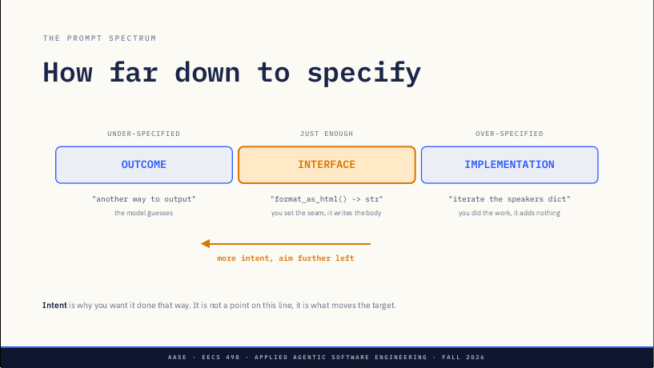

L03 · Big Three：每次 AI 编码都在拨三根杠杆——上下文、模型、提示词
L02 讲的是机制（token、上下文窗口、幻觉、能力与知识），L03 在机制之上搭一个框架：每次用 AI 写代码都要做三个选择——Context、Model、Prompt。三者重叠处才是靶心；结果出错时按「上下文→模型→提示词」的顺序排查，最常见的原因是上下文。
课件 slides.md slides.pdf 演示代码 L03-transcript-analytics 本页导读约 20 分钟
讲者备注把这一讲定位得很清楚：L02 是「机制」，L03 是搭在机制之上的框架，讲者说这是学生以后整个职业生涯都会用到的一讲。
第 2 页先查练习环境 aider-practice 的状态，问三件事：模型服务（serving）起来了没有；Aider 连得上没有；安装有没有卡住（friction）——权重拉不下来、Aider 连不上服务器、机器太小。整周都有 office hours，助教都能帮装环境；Fri Sep 11 是环境关卡，同时要交完全部十六节练习。
备注：举手三次统计这三类问题；三类都很常见，都不是学生的错。记下名字约到 office hours，不在课堂上现场调试。
每次 AI 编码都要做三个选择，错一个，另两个再努力也补不回来
讲者备注：L02 已经讲过分词、上下文窗口、幻觉、能力与知识之分这些机制；这一讲是机制之上的框架。每次会话都有三个选择，错了一个，另外两个再用力也救不回来。
三根杠杆各管什么
原文 · Every AI coding sessionContext：模型此刻看得见什么。
Model：用哪个 LLM，看它的能力和知识。
Prompt：意图表达得有多清楚。
讲者在画靶心之前逐个定义：上下文是文件、历史、repo map、系统提示词，而且是有限的（Finite）；模型是一行配置，不是对厂商的忠诚；提示词看输出是否稳定一致，不看措辞是否巧妙。
靶心：三者重叠
原文 · Where the three overlap
三种只占两圈的情况：区域 1 有模型和提示词、没上下文——干净、自信地改了一个它从没读过的文件，这就是今天的演示；区域 2 有上下文和提示词、模型不够——需要的都给了，它还是做到一半就丢了线索；区域 3 有上下文和模型、提示词含糊——文件对、模型强，它做出一个合理但你从没要求过的东西。
讲者备注：先在空中画三个圈，再让幻灯片确认；按顺序讲三种「差一点」，先问学生哪种最常见再揭晓。区域 1 就是 1:00 的演示，先点名，演示时学生会认出来。区域 2 和 3 是「诚实」的失败：弱模型和含糊提示词都会产出看起来像进展的东西。
三个里对两个不够。备注说这是整张图的结论：在另外两根杠杆上多花的力气，买不回你漏掉的那一根。
出错时按顺序问三句
原文 · Diagnostic结果出错时按顺序问：Context——文件在窗口里吗？Model——它够强吗、够新吗？Prompt——意图清楚吗？
多数学生怪模型，其实通常是上下文。讲者备注说这是整讲的关键：结果出错时，动任何东西之前先按顺序问这三句；模型在统计上是最少见的原因。下周 Lab01 就要用这套诊断。
上下文是你最直接能控制、也最容易出问题的杠杆
讲者备注：这是学生最直接能控制、也惹麻烦最多的一根杠杆，接下来二十分钟大部分讲它；几周后学生要自己实现这部分。
上下文里有四样东西
原文 · What's in your contextAider 的上下文有四个来源：added files（你用 /add 加进来的文件）；Repo map（自动生成的结构摘要）；Chat history（一直累积，直到 /clear）；System prompt（Aider 给模型的指令）。
讲者备注：只有加进来的文件，模型才能改——这句话说两遍。repo map 是自动摘要，不能代替把文件加进来；对话历史一直累积到 /clear，这是两页之后的第二个坑；系统提示词是 Aider 自带的，目前用默认就行。
全加进去比只加对的更糟。备注举的错误直觉是 aider /*.py：看起来有帮助，其实没有。
外科手术式的上下文
原文 · Surgical context加文件前问三类：Change——这个任务要改哪些文件？只有这些才能被改；Read——它必须先读懂哪些？这些也加；Reference——只读的背景，通常 repo map 已经够了。
只加这些，其余用 /drop 去掉，经常看 /tokens。上下文是设计，不是安装步骤。
讲者备注：这三问在每个任务之前问，不是会话开始问一次就完；只有第一类能被改，第二类是模型为了改对第一类必须读的，第三类通常 repo map 就够。
看 /tokens 的分项
原文 · Where your tokens go幻灯片上的 /tokens 示例输出：repo map 1,800；chat history 3,100；main.py 6,000；arg_parse.py 1,300；total 12,200（窗口 of 32,768）。
做任何大动作前后都看一眼，这是窗口唯一诚实的视图。备注强调它按来源分项，所以是诊断工具而不只是计数器：如果 repo map 或对话历史是最大的一行，这本身就是发现。
学生最常卡住的两个坑
原文 · Where students get stuck缺上下文（Missing context）：arg_parse.py 没有 /add → 模型只改了 main.py → 结果坏掉。
对话历史渗漏（Chat history bleed）：任务 B 继承了任务 A 的假设。解法：/clear。
讲者备注：缺上下文是本课最常见的失败。模型只改上下文里的东西，没加进来的文件就没法修。Aider 会主动提出把它加进来，接受就得救；拒绝了，或者用一个不问的工具，就只有一个文件被更新，得到一个看起来做完了的半截改动。历史渗漏更隐蔽：在 A 上花了十分钟再开始 B，那些消息还在，带着旧假设；/clear 重置对话但保留文件。这一点留给课间讨论，不在这里回答。
课间讨论 · 5 分钟
原文 · Chat break · 5 min课间讨论 5 分钟：十个文件、要改一个函数、它有三个调用方，你怎么决定加哪些？讨论你的策略。
备注：0:35 是固定的休息点，题目来自 overview.md 的 chat_break 字段。没有唯一正确答案——要养成的习惯是把上下文当设计决策而不是安装步骤；追问策略而不是文件清单，让两三个人说出来就往下走。
按任务挑模型：能力要配得上任务，不按学期定
讲者备注：上下文是喂给模型的东西，选模型是同一个决定的另一半；这里讲十分钟就转到提示词。
选模型看四个维度
原文 · Choosing四个维度：Reasoning（推理能力，即 L02 讲的 capability）；Speed（速度，通常和能力相关）；Cost（成本：用厂商是美元，用自己的机器是内存和秒数）；Context window size（上下文窗口大小——但更大 ≠ 更好，见 L02）。
讲者备注：速度和体量跟着推理能力走；越聪明往往越大，在学生自己的硬件上意味着更慢、更吃内存，而不是更贵。账单没了，取舍也不会消失。有的模型支持 128K，有的 1M，L02 已经说过大不等于好，大海捞针（needle）的问题是真的。
为这个任务挑对的模型
原文 · Right model for this job一行的 bug 修复：便宜、快的模型就够了，在这里花能力买不到任何东西。
三个相互依赖的新文件：用你手上最强的模型，做错的代价比调用本身更高。
排行榜（aider.chat/docs/leaderboards/）是你这个任务的代理指标，不能代替它。备注：按任务选，不按学期定，这就是整页的意思；排行榜值得知道，但它代替不了真跑一遍你的任务。
先用会失败的模型
原文 · Start on the model that fails本学期的经验法则：先用 4b——它在你看得见的地方失败，失败本身就是课；等它不再教你东西、只是白白耗掉你一个下午，再换到 9b。
一个替你兜住错误的模型，会把你需要看见的错误藏起来。
切换命令：/model ollama_chat/qwen3.5:9b。文件和历史都保留，新模型会从头读一遍。
讲者备注：明确告诉学生，这和他们上班时的做法正相反；多数人的切换点在第 6 节练习前后，也就是第一次真正的重构。
提示词把意图说到「接口」那一层就停
讲者备注：这是最后一根杠杆，也是最短的一节，因为 L04 整讲都在讲它。
要具体到哪一层
原文 · How far down to specify
页底一句：Intent 是你为什么要这样做。它不是这条线上的一个点，而是让靶子移动的东西。
讲者备注要点：提示词有两部分，instruction 是要做什么，intent 是为什么要这样做；漏掉 intent，模型就用训练数据里的先验去补，那是你看不见的猜测。这页的依据是：specification 关掉决定，intent 引导你留着没定的那些——所以一个画成区间，一个画成箭头。要预先纠正误读：箭头不是叫人写得更含糊，而是说讲清理由时靶子在左端变宽；intent 只延长左边缘，对右边缘没有作用，因为代码已经是你自己写的。瞄准接口：点名文件、函数、签名、调用点，然后停——接缝归你，函数体归模型。另外这根箭头有长度，长度就是模型能力：在 4B 上它很短，一段「为什么」会把唯一那句「做什么」埋掉，这就是 L02 的大海捞针用在了自己的提示词上；本学期 intent 控制在一个分句以内。
含糊 vs 具体
原文 · VagueVague：只说「再加一种输出数据的方式」。模型会猜：也许是 text，也许是 print()，也许连 CLI 参数都不加，结果不可预测。
具体的写法
原文 · SpecificSpecific：CREATE output_format.py: format_as_html(...) -> str，UPDATE main.py: ADD html to --output-format。可预测、可重复、一次成功。
讲者备注：含糊的那个只给方向，把每个具体决定都留给模型；它不是错，而是不可预测，不可预测才是问题。具体的那个写起来更长、用起来更快，目标是可预测而不是简短。L04 会把它正式化为 IDK prompt。
What > How：说清结果，不规定实现；但「what」必须具体到能成功。有了光谱就更清楚——具体到接口就停；「What > How」不是「写含糊点 AI 自己会想明白」。
三根杠杆各对应一个机制
原文 · Each lever has a mechanic回扣 L02：Context → 上下文窗口经济学，更大不是免费的；Model → 能力与知识两条轴；Prompt → 收窄采样分布。
Big Three 不是随意定的，是机制之上的框架。备注：每根杠杆都是上一讲的一个机制加了把手；你会读到的每条提示词建议，最后都能归到这三者之一——「Add the file」利用的是窗口，「Be specific」利用的是先验。
同一个模型、同一句提示词，多加一个文件就对了
备注里的过渡：框架讲完、杠杆拆完，现在看它怎样决定一次真实的修改。演示用一个 5 个文件的文字稿分析（transcript analytics）代码库。
演示流程
原文 · Demo flow① Aider 只带 src/main.py，提示词：加一个 --output-format 参数。
② 它提议重写 arg_parse.py——一个它从没读过的文件。拒绝（Decline）。
③ 运行程序：diff 很干净，却报 AttributeError；然后 /undo。
④ /add src/arg_parse.py，同一句提示词：改动连贯，能跑。
⑤ /tokens：对话历史是最大的一行，比五个文件加起来还大。
⑥ /model ollama_chat/qwen3.5:4b、/clear、/drop、/add src/main.py，再用同一句提示词。
代码库在 materials/demos/L03-transcript-analytics，可以回家再跑一遍。
讲者备注：五个文件里 arg_parse.py 管所有命令行参数，main.py 管计数和打印，开讲前先说清，整个演示就靠这一点。第 2 步是关键时刻：它提议重写一个没读过的文件，屏幕上是 diff，减号行就是它弄错之处的逐行清单——指着 -default=DEFAULT_TOP_N 和 +default=10 看。那里要拒绝两次而不是一次，第二个默认是 Yes，按默认会把编出来的文件写进磁盘、演示就毁了。第 4 步是整讲一句话：同一个模型、同一句提示词、多一个文件。第 6 步故意 drop 再 add：不这样，五个文件都还在上下文里，4B 复现不了失败；同样的错误更快出现——失败从来不是模型。某一步出意外，就说那句话往下走：模型只能改上下文里的文件。
多数「AI 错了」都落在上下文或模型选择上
留给你的三个问题
原文 · Three questions for you三个问题：一个 50 个文件的项目要改 API 层的鉴权（auth），你怎么 /add？为什么把所有文件都加进来结果反而更差（worse）？会话中途换模型（switch），什么会变？
多数「AI 错了」最后都落到第 1 或第 2 个问题上。备注：这不是反问，要学生在 Lab01 前真的作答；第 2 题多数人会答错——是更差，不只是更贵。
这一讲的结论
原文 · What to take awayContext, model, prompt：三根杠杆，你以后每次会话都会用到。
Context 通常是问题所在：多数「AI 错了」其实是缺上下文。
Model：选模型是技术决定，不是偏好，按任务匹配能力。
Prompt 说 what 不说 how：点名文件、点名函数、说清结果。
三个里对两个不够。重打提示词之前，先问那三句。
备注里的实际回报：/add 和 /drop 是学生第 3、4 周要实现的七个功能之一，把文件拉进上下文是另一个，多轮历史背后的裁剪是第三个——这周练的，正是他们之后要亲手写的行为。
接下来
原文 · Lab01 + the buildFri Sep 11：环境关卡，全部十六节练习截止。
Mon Sep 14 / Tue Sep 15：Lab01，转折实验课（the pivot lab）。
The build：七个功能，第 3、4 周；Lab01 之后开始，spec 和它一起评分。
L04 Thu Sep 10：Spec-Driven Coding，两天后。
Lab01 里出问题时用今天的诊断：是上下文、模型还是提示词？备注：周五既是关卡也是十六节练习的截止；学生还没开始 build，build 在 Lab01 之后开始，spec 和它一起评分。周四讲 Spec-Driven Coding：plan 等于 prompt，是让「写具体」能规模化复现的产物，也是 build 前的最后一个技巧。